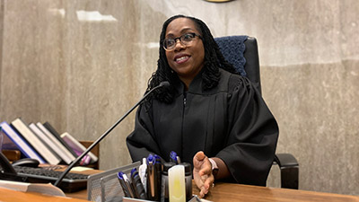
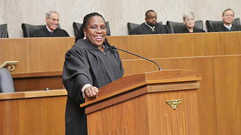

This is historical material “frozen in time”. The website is no longer updated and links to external websites and some internal pages may not work.
On February 25, 2022, President Joe Biden nominated Judge Ketanji Brown Jackson to become the 116th Associate Justice of the United States Supreme Court.
On April 7, 2022, a bipartisan group of Senators confirmed Judge Jackson's nomination.
Since Justice Stephen Breyer announced his retirement, President Biden has conducted a rigorous process to identify his replacement. President Biden sought a candidate with exceptional credentials, unimpeachable character, and unwavering dedication to the rule of law. And the President sought an individual who is committed to equal justice under the law and who understands the profound impact that the Supreme Court’s decisions have on the lives of the American people.
That is why the President nominated Judge Ketanji Brown Jackson to serve as the next Justice on the Supreme Court. Judge Jackson is one of our nation’s brightest legal minds and has an unusual breadth of experience in our legal system, giving her the perspective to be an exceptional Justice.
Judge Jackson was born in Washington, DC and grew up in Miami, Florida. Her parents attended segregated primary schools, then attended historically black colleges and universities. Both started their careers as public school teachers and became leaders and administrators in the Miami-Dade Public School System. When Judge Jackson was in preschool, her father attended law school. In a 2017 lecture, Judge Jackson traced her love of the law back to sitting next to her father in their apartment as he tackled his law school homework—reading cases and preparing for Socratic questioning—while she undertook her preschool homework—coloring books.
Judge Jackson stood out as a high achiever throughout her childhood. She was a speech and debate star who was elected “mayor” of Palmetto Junior High and student body president of Miami Palmetto Senior High School. But like many Black women, Judge Jackson still faced naysayers. When Judge Jackson told her high school guidance counselor she wanted to attend Harvard, the guidance counselor warned that Judge Jackson should not set her “sights so high.”
That did not stop Judge Jackson. She graduated magna cum laude from Harvard University, then attended Harvard Law School, where she graduated cum laude and was an editor of the Harvard Law Review.
Judge Jackson lives with her husband, Patrick, and their two daughters, in Washington, DC.
Judge Jackson comes from a law enforcement family, with two uncles who were career law enforcement officers: one was a Miami-Dade County sex crimes detective, and the other rose through the ranks of the City of Miami Police Department to become the Chief of Police. Her brother served as an undercover officer in a drug-sting unit in Baltimore after graduating from college, so she should know quite well the difficulties and dangers our officers face in the line of duty every single day … From our analysis of Judge Jackson’s record and some of her cases, we believe she has considered the facts and applied the law consistently and fairly on a range of issues. There is little doubt that she has the temperament, intellect, legal experience, and family background to have earned this appointment. We are reassured that, should she be confirmed, she would approach her future cases with an open mind and treat issues related to law enforcement fairly and justly. We wish her well as the confirmation process begins.
Fraternal Order of Police
On February 25, 2022, President Joe Biden nominated Judge Ketanji Brown Jackson to become the 116th Associate Justice of the United States Supreme Court.
On April 7, 2022, a bipartisan group of Senators confirmed Judge Jackson's nomination.